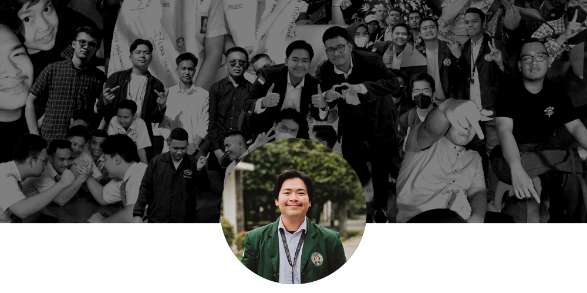

About Me
Hi, My Name
Faiz Hazim Hawari
I'm 19 years old, I started learning programming languages when I was in middle school, I was interested in the code because the writing was cool, and I mostly learned self-taught, I learned through the community, and articles, in the 10th grade of middle school I was able to install Linux on Android, after I then I continued to Senior High School, I majored in Science, I thought I would be able to learn programming for me to pursue into that field, apparently I was wrong in my major and I had to study the program self-taught again until now. On 2022, Alhamdulillah, I entered in the department of informatics engineering at the University of Sumatra Utara
What I am interested in?
Enthusiastically advancing through my diploma studies in Informatics Engineering, I am driven by an insatiable passion for the digital realm. With a keen interest in UI/UX design, illustration, and programming, I eagerly delve into the captivating world where creativity meets technology. My academic journey has not only equipped me with a solid foundation but has also ignited an excitement to contribute to innovative and user-centric solutions.
EDUCATIONAL HISTORY
-
University of Sumatera Utara
Majoring in Informatics Engineering -
SMAN 5 PEMATANGSIANTAR
end XI SCIENCE 3 | 2022

Happy times
My Childhood
I falling love technology since i was a child, My childhood has been accompanied by technology, playing computer, playing games, and it has brought me to this day, and until now I still like it, and I'm sure it will bring me to my world tomorrow.
I know basic things programing thing like:
-
C++
-
Java
-
HTML5
-
Python

Feed


Experiences

Volunteering
I thoroughly enjoy engaging in various activities, taking on roles as a committee member, and orchestrating all the necessary aspects required to ensure the success of these endeavors.
Event Committee
-
Publication, Decoration, Documentation Staff at PKKMB USU 2023
Pemerintahan Mahasiswa (PEMA) Universitas Sumatera Utara Jan 2023 - Aug 2023 · 8 mos
• Managing photography of participants, guests, and invitees • Creating a 3-minute after-movie
Organization
-
Google Developer Group Medan
Staff of UI/UX Designer at Developer Department · Aug 2023 - Present -
Badan Eksekutif Mahasiswa Fakultas Vokasi
Staff of Media and Communication Division · Dec 2022 - Present -
Himpunan Mahasiswa Teknik Informatika
Staff of Media and Communication Division · Oct 2022 - Present • Graphic designer on HIMTI's Instagram feed with over 30 posts.
• Organized a webinar on UI/UX design attended by more than 50 people. • HIMTI Games committee.
Portfolio
Hi, This page about my Portfolio
paiz's Portfolio
My portfolio is a reflection of my creative abilities and unwavering dedication. With a deep passion for graphic design, I have meticulously crafted a collection of projects that exemplify my versatility and innovative mindset. From designing captivating UI/UX interfaces that prioritize seamless user experiences to creating visually striking illustrations that bring concepts to life, my portfolio embodies the fusion of technical prowess and artistic finesse. Each project showcases my commitment to continuous learning and growth, encompassing a diverse range of domains, spanning from branding to web development. Through my portfolio, I present my journey as a dedicated and forward-thinking designer, capturing my dedication to producing impactful and purposeful visual solutions.
This called Vector
Vector & Vexels Art
I've created this "Vector Vexels Art" using Adobe Photoshop, utilizing a photo of an individual named Alya Sabila Azhar as a reference. This process enabled me to combine vector techniques with pixel art aesthetics to craft a detailed and flexible artwork in terms of scalability. I've been greatly inspired by the creative potential offered by vector vexels art and I'm delighted to share the outcome.

This called Lanyard
paiz! Designer & developer
The lanyard I've crafted was designed using Photoshop. It all started when I found myself with spare time and without a lanyard. This motivated me to experiment by creating a mockup, which eventually led to bringing the design to life. The process allowed me to combine creativity with functionality, resulting in a unique and personalized lanyard that I'm proud to share.
And this is the result of the designed lanyard.
This called 3D Rendering
Make A Stormy Ocean
Crafting a turbulent ocean scene through the utilization of Blender's capabilities, the project aims to capture the dynamic essence of a stormy sea. This endeavor entails harnessing Blender's intricate tools to breathe life into each wave and surge, creating a visual spectacle that encapsulates the raw power and beauty of nature's tempestuous waters. The final outcome seeks to immerse viewers in a virtual realm where artistic ingenuity and technical finesse merge to simulate the intricacies of a stormy ocean.
This called Video Editing
Another Side FMIPA
"Another Side FMIPA USU" is the outcome of a creative endeavor, a video I crafted during an unexpected moment of heavy rainfall. This situation inspired me to weave spontaneous moments into a video that reflects a different facet of my experience at the Faculty of Mathematics and Natural Sciences, University of North Sumatra (FMIPA USU). Through the creation of this video, I aimed to showcase a creative and cheerful perspective amidst potentially limiting weather conditions, capturing an intriguing portrait of moments that might otherwise go unnoticed.

This called 3D Mockup
BEM VOKASI USU
I have created a 3D shirt mockup for the Student Executive Board of the Faculty of Vocational Studies at USU, depicting the design of the executive committee members' shirts realistically. This is my effort to provide a comprehensive visualization of the appearance and function of the shirts within the organizational context. With expertise in designing 3D objects, my goal is to craft visuals that reflect professionalism and the identity of the Student Executive Board of the Faculty of Vocational Studies through this elegant shirt.
This called Feed Instagram
HIMTI FV USU
I have created numerous poster designs intended for display on the Instagram feed of the Informatics Engineering Student Association at the University of North Sumatra (HIMTI FV USU). Each poster design is meticulously crafted to ensure an engaging and informative visual for the account's followers. With creativity in design, the aim is to strengthen the visual identity of HIMTI USU and provide valuable and captivating content for both members and the wider community following the account.
I am proficient in several design software.
-
Adobe Photoshop
-
Adobe Illustrator
-
Figma